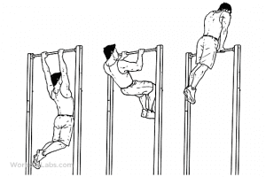

< < < Back
Why You Should Skip Crunches And Do These Ab Exercises Instead – Return Of Kings
Spring is here, and summer is soon to follow: Summer means spending days on vacation—at the beach, at the pool, or just at home, the opportunities to gallivant around with your shirt off are endless in the warm months. So why not get an impressive abdomen, something literally everybody wants?
The Exercise You Should Ignore
What makes mine different is that my abdominal workout absolutely repudiates the use of crunches, an exercise that is useless for anybody who doesn’t have a very specific problem to fix. The crunch was invented by the first bodybuilders that used HGH, and the exercise was intended to produce a light bit of toning for their swollen roid-bellies, making them a bit more aesthetically pleasing. The exercise does not develop the strength of the core for lifting, does not utilize other muscles as support, does not train the core how to quickly flex for protection from strikes, and will, at best, give you the body of a 14-year old Brazilian rent boy. And if that’s the sort of thing you’re into, don’t let me stop you.
Due to the dismal state of fitness training in the United States (and the Western world in general, really), most of the fitness trainers you’ll speak to are completely unaware that there even exist other abdominal exercises beyond crunches, sit-ups, and maybe some of those silly leg-waggling exercises people do on the floor.
There are many ab exercises that are much harder than these exercises, and correspondingly with much greater rewards. Mastery of these will give you a truly impressive core (meaning the serratus abdominus, obliques, and all else), a solid wall of muscles across your core that will not only look good, but make you stronger in lifts, tougher in a fight, more flexible, and even has tangential benefits to your sex life (the sexual benefits of having a strong waist and hips should be obvious).
Supplementary Exercises
Seeing as the core occupies a central place in the human anatomy, there are many exercises that utilize the abs as a support muscle group.
Pull-Ups are one such example. Indeed, many of those who find themselves first capable of doing a set of 10 “dead hang” pull-ups find their stomach to be sore the next day. In a proper hang, the abdominal muscles flex to keep the torso erect and prevent themselves, and thus the spine, from sagging. This supplemental abdominal tension exists for all pulling exercises, ranging from the basic pull-up, to the “hand and a half” pull-up, to the elite level pulls like the one-handed pullup and the muscle-up.

More so than the pull-ups, the power lifts utilize the abs for support: properly done deadlifts and squats will incorporate the core as a support, and correspondingly flexion can be observed and felt if paid attention to. But the exercises that utilize the abdominals the most in support are overhead lifts such as overhead squats, which are, as to be expected, squats done while holding a bar over your head. Bear in mind that there are special techniques needed for the overhead squat, and this exercise will have its own future article.
In a related family are overhead farmer’s walks: carry a weighted barbell, a loaded duffel bag, a big rock, or any other heavy object over your head, and just walk with it. The abs and lower back muscles have to really flex hard in order to keep the trunk stable. Obviously, if your lumbar vertebrae hurt after doing this, you’ve made a mistake. Working with a beer keg is also an effective variation of the exercise, as the sloshing liquid adds an element of instability.
Direct Exercises
But of course, these exercises that use the core as assistance can only take you so far-for a truly impressive midsection, you must perform exercises that directly attack the abdominal muscles. And for that I reiterate, don’t waste your time with crunches. Instead try a few of these exercises:
The hanging leg raise series is a series of exercises that force the abdomen to powerfully contract. The first of these is the hanging knee raise: Simply grab a hold of a pull up bar, keep your torso and head upright, and raise your knees together as high as they can go
From there, the steps involve gradually extending the legs until your legs can swing out fully extended from the hips. But why stop there? Why not lift the legs higher, while keeping the torso in the same position (a move known as the V-Lift)?
Once the hanging leg raise is mastered, you can begin doing static holds such as the L-Sit and V-Sit for time: Simply do the leg raise or v-lift, and hold the legs at the peak of motion. This exercise can be done on the floor or hanging, with the hanging variation being slightly easier. It is worth noting that the US Men’s Olympic Gymnastics team requires a minimum of 60 seconds held for either the floor or hanging L-Sit, and a world-class men’s gymnast has core strength any physical culturist would envy (for information’s sake, my all time best is 30 seconds).
Another exercise to do with the pull-up bar is the Roman Chair situp, also called the inverted sit-up. Wrap your legs around a horizontal bar and hang down vertically and upside down. Then bend at the waist until you can’t move up anymore. This is probably the advanced abdominal exercise the layperson is most familiar with, having seen it in many films.
The dragon flag is one of the most difficult ab exercises to do for repetitions, but is well worth it. Lay down on a flat bench—and I emphasize a flat bench, as you cannot do this on an adjustable benches—and grab the bench behind your head with your elbows pointing up. Then lifts the legs and hips vertical, resting your weight on the trapezius muscles. The key is to not jackknife at the waist
Then, keeping your torso and legs straight, holding on to the bench, and using the upper part of your back as a pivot, bring your legs down and forward until your entire back is just about to touch the bench, then go back up. If this is your first time, you will likely not be able to do more than one, at best. I myself can only do maybe 5 before tiring.

Dragon Flag Part 2
All of the exercises I’ve given will see you well on your way to having a strong and versatile core, but because I like you people:
The Esoterics
While dragon flags, L-Sits, and V-Sits comprise the bulk of my abdominal workouts, there are occasional others I have done for fun, or when I didn’t have the equipment to do one or the other:
The first are stomach vacuums, an abdominal exercise that requires literally no equipment other than your own body. Standing straight with your arms down to your sides, breathe in and simultaneously pull in your abdomen, and then just use your muscles to hold your stomach in the pulled-in position as you breathe out, and hold it for time. Imagine that you are trying to touch your bellybutton to your spine. Hold it for 10 seconds to start, and gradually increase the time.

Medicine ball passes are useful in teaching the torso to “brace” and rapidly flex, as the ball mimics the force of an oncoming punch. Just toss the medicine ball against a wall and catch it, or play catch with a friend. The heavier the ball the better—start with a 10 or 15 pound one, and work your way up. It may not sound too hard, but medicine ball work is very tiring.
But if you’ve simulated being punched in the gut, why not do the real thing? Certain styles of martial art do this as a body hardening exercise: put your hands behind your head, flex the abs, and have a partner punch you in the gut for 60 seconds. Then switch.
Conclusion
The exercises I have given here are infinitely more difficult and thus more functional than the useless narcissistic abdominal exercises most people do today. But bear in mind that the strongest abs in the world cannot be seen if there’s a layer of fat over them. The saying “abs are made in the kitchen” is a correct one: for a truly defined midsection, you have to cut weight and get trim, and this is beyond the scope of this article.
But in my not-so-humble opinion, it is better to build the strength and functionality, and thus always be capable of cutting down to look good, then to have the skinny twink look.
Read More: The Only 4 Exercises You Need